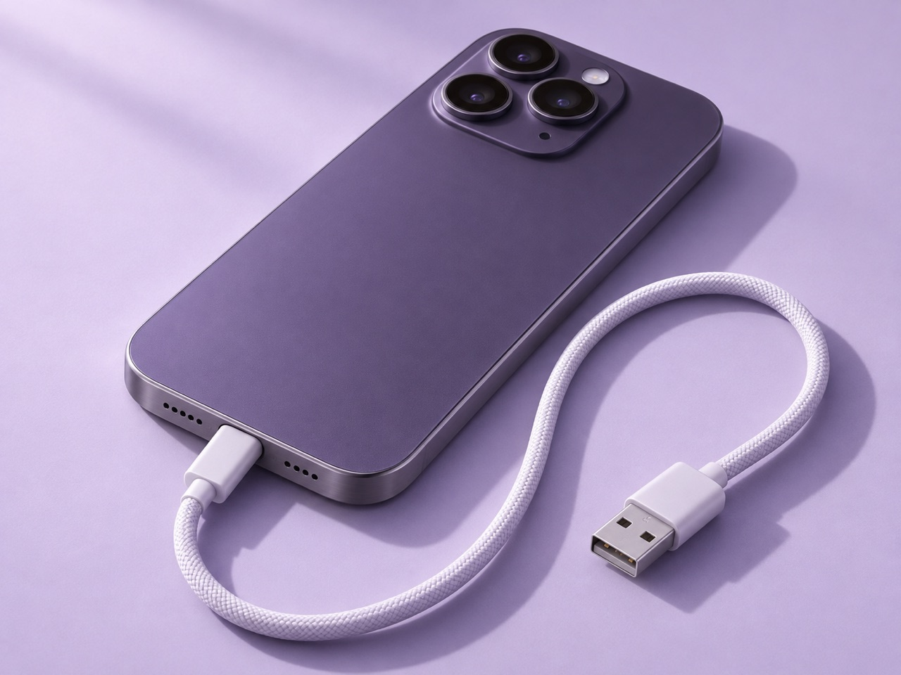

Верните свои приложения на iPhone.
Проверьте каталог и получите returny для Windows. Для установки на iPhone понадобится USB-кабель и аккаунт, с которого вы скачивали приложение.
Открыть миниапп Тест для команды · 0 ₽
Проверьте каталог и получите returny для Windows. Для установки на iPhone понадобится USB-кабель и аккаунт, с которого вы скачивали приложение.
Открыть миниапп Тест для команды · 0 ₽